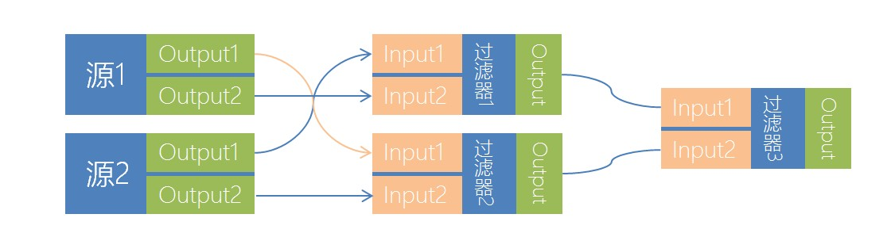
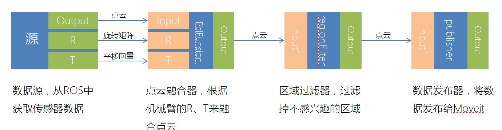

HIROP感知模块编程指南
通过学习本指南可以掌握如何开发一个HIROP的感知模块插件。
感知模块介绍
hirop perception模块可以使我们的机器人具有感知能力。
在HIROP中，将感知分为两部分：前端和后端。 其中，前端指通过各种传感器（如：视觉、触觉、听觉）及相关处理算法（如：计算机视觉、PCL）以尽量精确的方式进行环境建模。 后端指的是，当通过前端将环境建模后经过一系列诸如语义分割、物体识别、物体分割等方法将物理世界以抽象的方式进行表达。 当前HIROP的感知模块仅实现了“前端”。
感知模块的框架
感知模块采用了实现了管道流和图计算的ECTO作为主框架。其中有四个关键的概念：源（Source）、过滤器（Filter）、发布器（Publisher）、图（Graph）。
- 1，当数据从传感器中读出后，会按顺序流向感知模块的不同过滤器（从传感器中获取数据的过滤器就是Source）；
- 2，当数据经过过滤器时，过滤器会通过相关相关算法对数据进行修改（这就是Filter的作用）；
- 3，当数据流过所有的过滤器后，会通过一个过滤器将数据发布出去（发布数据的特殊过滤器就是Publisher）；
- 4，感知模块可以根据需求随意的连接相关过滤器来构成一个图（Graph可以根据需求随意变化）。

简单的Graph

编程
Note
当前感知模块的所有数据均为点云，下面的所有教程均以编写点云的过滤器为例子。
下载源码
HIROP感知模块是作为HIROP的一个子模块存在，因此需要下载完整的HIROP工程。
$ git clone https://github.com/HSRobot/hirop.git
$ cd hirop ; mkdir build; cd build
$ cmake ../
$ make
$ make install
$ echo 'PYTHONPATH=/usr/local/lib/python2.7/dist-packages/hirop_perecption/:$PYTHONPATH' >> ~/.bashrc
编写过滤器
在hirop/src/perception/filter/中创建过滤器的源文件(myfilter.cpp)和头文件(myfilter.h)。
myfilter.h
#pragma once
#include <ecto/ecto.hpp>
#include <ecto_pcl/ecto_pcl.hpp>
using ecto::tendrils;
namespace hirop_perception{
class MyFilter{
public:
/**
* @brief MyFilter 构造函数
*/
MyFilter(){}
/**
* 析构函数
*/
~MyFilter(){}
/**
* @brief 定义过滤器参数
*/
static void declare_params(tendrils& params);
/**
* @brief 定义过滤器输入输出
*/
static void declare_io(const tendrils& params, tendrils& in, tendrils& out);
/**
* @brief 过滤器的过滤实现
*/
template <typename Point>
int process(const tendrils& inputs, const tendrils& outputs,
boost::shared_ptr<const pcl::PointCloud<Point> >& input);
/**
* @brief 过滤器的配置
*/
void configure(const tendrils& params, const tendrils& inputs, const tendrils& outputs);
private:
float _z;
};
}
myfilter.cpp
#include "myfilter.h"
using namespace hirop_perception;
void MyFilter::declare_params(tendrils& params){
params.declare<float>("Z", "The pointcolud vaild Z area", 5);
}
void MyFilter::declare_io(const ecto::tendrils ¶ms, ecto::tendrils &in, ecto::tendrils &out){
in.declare<ecto::pcl::PointCloud>("input", "The colud to filter");
out.declare<ecto::pcl::PointCloud>("output", "The colud to out");
}
void MyFilter::configure(const ecto::tendrils ¶ms, const ecto::tendrils &inputs, const ecto::tendrils &outputs){
_z = params.get<float>("Z");
}
template<typename Point>
int MyFilter::process(const tendrils& inputs, const tendrils& outputs,
boost::shared_ptr<const pcl::PointCloud<Point> >& input){
typename pcl::PointCloud<Point>::Ptr outPointCloud(new pcl::PointCloud<Point>);
int size = input->points.size();
for(int i =0; i < size; i++){
if(input->points[i].z < _z)
outPointCloud->points.push_back(cloud->points[i]);
}
outPointCloud->height = 1;
outPointCloud->width = outPointCloud->points.size();
outputs.get<ecto::pcl::PointCloud>("output") = ecto::pcl::PointCloud(outPointCloud);
return ecto::OK;
}
ECTO_CELL(hirop_perception, ecto::pcl::PclCell<MyFilter>,\
"VoxelFilter", "The point cloud voxel filter")
代码解析
必要的头文件
我们需要在filter.h中导入必要的头文件
#include <ecto/ecto.hpp>
#include <ecto_pcl/ecto_pcl.hpp>
过滤器的关键函数
- declare_params函数：
void MyFilter::declare_params(tendrils& params){
params.declare<float>("Z", "The pointcolud vaild Z area", 5);
}
该函数用于声明过滤器的参数。在下面的代码里，我们声明了MyFilter这个过滤器有个名为Z，类型为float的参数。用于配置过滤器应当过滤什么范围以外的数据。
- declare_io函数：
void MyFilter::declare_io(const ecto::tendrils ¶ms, ecto::tendrils &in, ecto::tendrils &out){
in.declare<ecto::pcl::PointCloud>("input", "The colud to filter");
out.declare<ecto::pcl::PointCloud>("output", "The colud to out");
}
该函数用于声明过滤器的输入和输出。每个过滤器均有输入和输出。在本例中我们有一个名为input，类型为ecto::pcl::PointCloud的输入，用于从上一级过滤器中介绍点云。
以及一个名为output，类型为ecto::pcl::PointCloud的输出，用于将点云输出到下一级过滤器中。
- configure函数：
void MyFilter::configure(const ecto::tendrils ¶ms, const ecto::tendrils &inputs, const ecto::tendrils &outputs){
_z = params.get<float>("Z");
}
该函数的作用在于：当过滤器被初始化时来完成过滤器内部的初始化，比如处理相关参数。在本例中，configure函数只是将过滤器参数Z保存起来而已。
- process函数：
template<typename Point>
int MyFilter::process(const tendrils& inputs, const tendrils& outputs,
boost::shared_ptr<const pcl::PointCloud<Point> >& input){
typename pcl::PointCloud<Point>::Ptr outPointCloud(new pcl::PointCloud<Point>);
int size = input->points.size();
for(int i =0; i < size; i++){
if(input->points[i].z < _z)
outPointCloud->points.push_back(cloud->points[i]);
}
outPointCloud->height = 1;
outPointCloud->width = outPointCloud->points.size();
outputs.get<ecto::pcl::PointCloud>("output") = ecto::pcl::PointCloud(outPointCloud);
return ecto::OK;
}
整个过滤器最重要的函数，用于对数据进行处理。在本例中，我们只是简单的将Z轴大于_z的点云给丢弃。然后通过下面的两行代码将过滤后的点云输出至下一级过滤器中。
outputs.get<ecto::pcl::PointCloud>("output") = ecto::pcl::PointCloud(outPointCloud);
return ecto::OK;
导出过滤器
最后，我们需要通过下面的代码来导出我们刚刚完成的过滤器。
ECTO_CELL(hirop_perception, ecto::pcl::PclCell<MyFilter>,\
"MyFilter", "My first filter")
ECTO_CELL宏的参数描述：
- hirop_perception：生成的感知模块的名称
- ecto::pcl::PclCell
配置工程
在完成代码的编写后，我们还需要配置相关的工程来将我们的过滤器编译。 在hirop/src/perception/filter/CMakeLists.txt的ectomodule函数前中添加以下代码
SET(SOURCES
${SOURCES}
myfilter.cpp)
编译工程
$ cd hirop/build
$ make
$ sudo make install
测试过滤器
在完成上述的教程后，我们就可以来测试下我们的过滤器，看看其是否有效。首先让我们创建一个python文件:perception_test.py，输入以下内容：
#!/usr/bin/env python
# -*- coding: utf-8 -*-
import hirop_perception
import rospy
import ecto, ecto_pcl, ecto_ros
if __name__=="__main__":
# 初始化ROS节点
ecto_ros.init(sys.argv, "perception_test")
rospy.init_node('ros_test')
# 构造一个从ROS话题中获取数据的过滤器，第一个参数是过滤器的名称，第二个参数是话题名称，第三个是将点云转换到的目标坐标系
rosSource = hirop_perception.PointCloudRos('source', topic_name="/camera/depth/points", world_frame='base_link')
# 构造一个将过滤器输出发布到ROS话题的过滤器，第一个参数是过滤器的名称，第二参数是发布的点云的参考坐标系
publisher = hirop_perception.PointCloudPublish("publisher", frame_id="base_link")
# 构造一个我们刚刚制作的自己的过滤器，设置过滤距离为2米
myFilter = hirop_perception.MyFilter('myFilter', Z=2)
# 构造一个点云可视化窗口过滤器
pclViewer = ecto_pcl.CloudViewer("viewer", window_name="PCD Viewer")
# 声明一个计算图
testPlasm = ecto.Plasm()
# 定义计算图的结构
testPlasm.connect(rosSource["output"] >> self.myFilter["input"], self.myFilter["output"] >> self.pclViewer["input"], self.pclFunsion["output"] >> self.publisher["input"])
# 运行计算图
sched = ecto.Scheduler(lookPlasm)
# 进入ROS的消息循环
rospy.spin()
直接运行脚本后，在接收到点云的时候会弹出一个窗口，正常的情况下应该可以看到Z大于2m的点云全部被过滤掉了。
完成
至此，所有教程均已结束